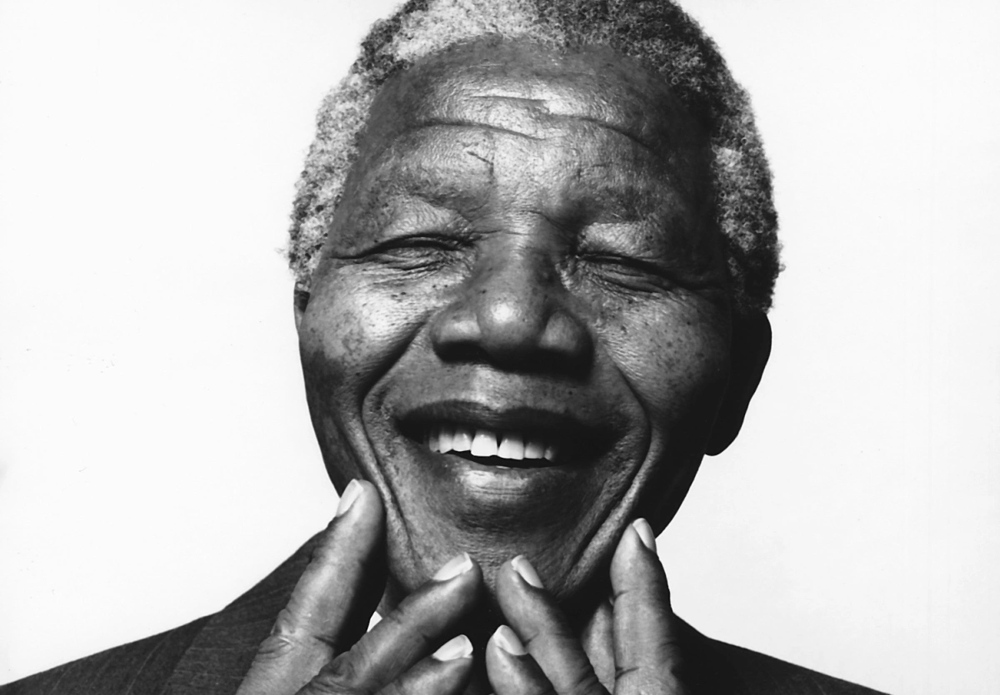

Portrait of Nelson Mandela, likely taken during the period after his release from prison in 1990
Early Life
- Born: July 18, 1918, in Mvezo, South Africa
- Mandela came from the Thembu royal family, and his birth name, "Rolihlahla," means "pulling the branch of a tree" or "troublemaker."
- After the death of his father, Mandela was adopted by Chief Jongintaba Dalindyebo, which gave him access to better education and a deep understanding of African leadership.
Anti-Apartheid Struggle
- In 1944, Mandela co-founded the African National Congress Youth League (ANCYL) and soon became a leader in the ANC.
- Defiance Campaign: In 1952, Mandela led the Defiance Campaign against unjust apartheid laws.
- Rivonia Trial: In 1962, Mandela was arrested and sentenced to life imprisonment during the Rivonia Trial for his involvement in sabotage activities against the apartheid regime.
- He spent 27 years in prison, mostly on Robben Island, enduring harsh conditions but becoming a global symbol of resistance to apartheid.
Freedom and Presidency
- Mandela was released from prison in 1990 as apartheid began to collapse.
- In 1991, he became the president of the ANC and led negotiations that ended apartheid.
- In 1994, Mandela was elected as South Africa's first black president, overseeing the transition to a peaceful multiracial democracy.
Key Achievements
- Nobel Peace Prize: Mandela received the Nobel Peace Prize in 1993, alongside then-President F.W. de Klerk, for their efforts to peacefully dismantle apartheid.
- Truth and Reconciliation Commission: Mandela's government set up this commission to investigate human rights abuses during apartheid, promoting national healing.
- Education and Advocacy: After stepping down from the presidency, Mandela became a global advocate for peace, education, and the fight against HIV/AIDS.
I am fundamentally an optimist. Whether that comes from nature or nurture, I cannot say. Part of being optimistic is keeping one's head pointed toward the sun, one's feet moving forward.
--- from Mandela’s autobiography, "Long Walk to Freedom", published in 1994